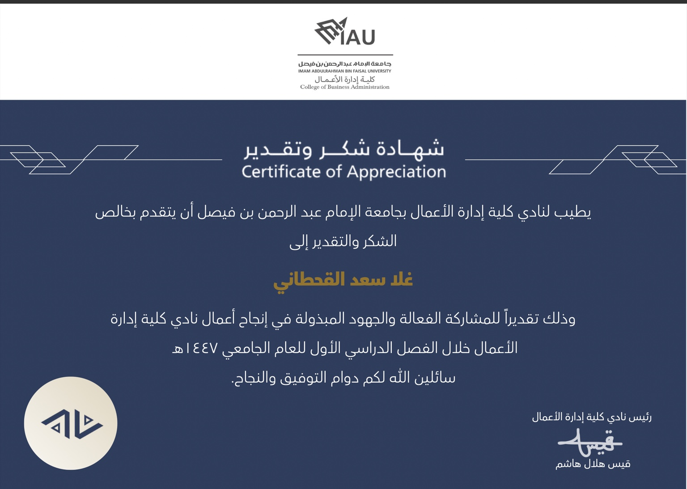
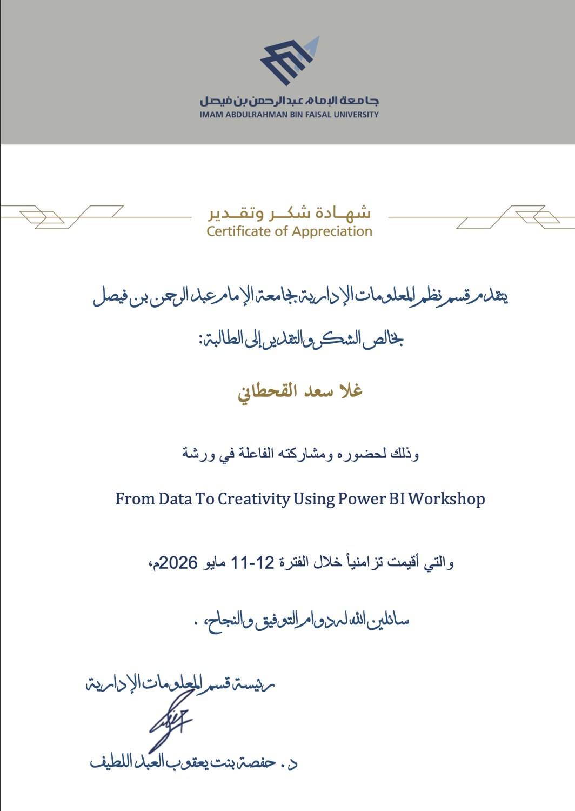
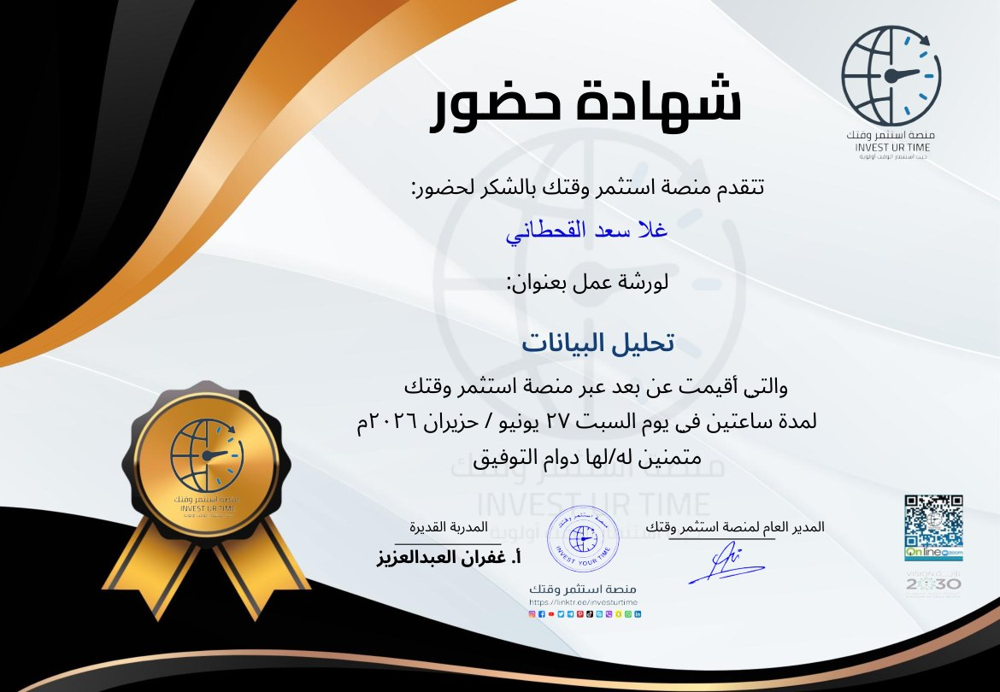
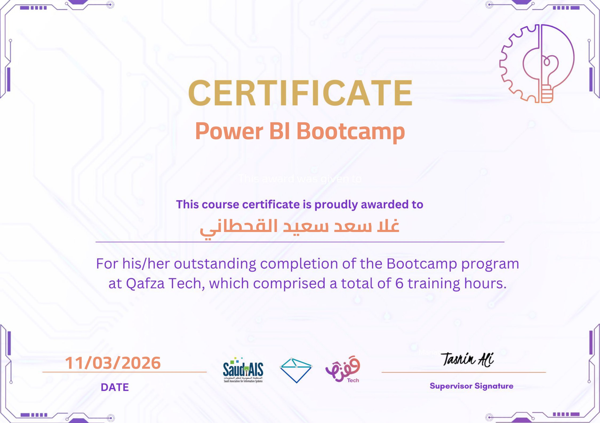
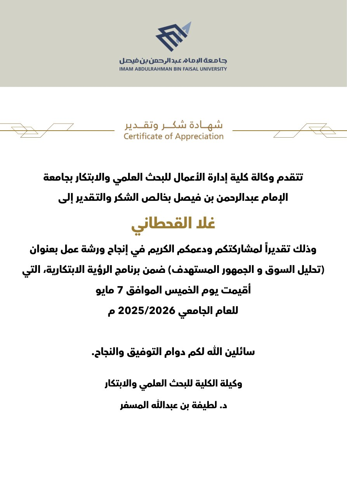

CERTIFICATE OF APPRECIATION
Business Administration College Club
Recognized for active participation and valuable efforts in supporting the club’s activities during the first academic semester of 1447 AH.
VIEW CERTIFICATE ↗I connect business needs with technology and data — turning complex questions into clear insights, practical solutions, and meaningful progress.
A multidisciplinary mindset shaped by information systems, business analysis, data, and hands-on leadership.
Understanding the business. Reading the data. Designing what comes next.
I am an Information Systems and Business Analysis student with hands-on experience in data analysis, business analysis, and digital solutions. I work across tools such as Excel and Power BI, alongside working knowledge of Python, SQL, and web technologies.
My experience also includes coordinating projects, supporting teams, and leading initiatives with 75+ members. I enjoy connecting business needs with technology to support informed decisions and effective execution.
A practical toolkit for understanding problems, exploring data, and building digital experiences.
Certificates and recognition reflecting my contribution, practical learning, and continued growth.

Recognized for active participation and valuable efforts in supporting the club’s activities during the first academic semester of 1447 AH.
VIEW CERTIFICATE ↗
Workshop participation certificate from Imam Abdulrahman Bin Faisal University, held during the university fair on May 11–12, 2026.
VIEW CERTIFICATE ↗
Attendance certificate from Invest Your Time platform for a two-hour workshop held on June 27, 2026.
VIEW CERTIFICATE ↗
Completed a six-hour Power BI Bootcamp program delivered by Qafza Tech, dated March 11, 2026.
VIEW CERTIFICATE ↗
Recognized by the College of Business Administration’s Research and Innovation Agency for supporting a workshop within the Innovative Vision Program, May 7, 2026.
VIEW CERTIFICATE ↗Selected academic work across analytics, business strategy, and digital solutions. Project links and supporting materials can be added to each card.
Analyzed sales increases and decreases using Excel and Power BI to identify key factors affecting performance, while exploring digital transformation initiatives.
Investigated Jarir’s e-commerce competitiveness against Amazon and Noon, combining customer-experience signals, website engagement, search interest, financial indicators, and stakeholder analysis. Applied PESTEL and Porter’s Five Forces to diagnose the underlying digital-performance gap and develop strategic recommendations.
Co-developed a university marketplace for exchanging books and study supplies using HTML, CSS, and JavaScript; contributed to the Support and Add New Product pages.
Built a Python ticket-sales management project with organized ticket records, search and retrieval, sales tracking, and report generation to support day-to-day ticket operations.
A data-focused project exploring factors associated with vehicle pricing and building a prediction-oriented analysis.
Evaluated Rakiza Freight as an investment opportunity through market sizing, fleet and hub rollout economics, leasing-plan validation, charging utilization, valuation, and a staged investment recommendation.
Coursework focused on understanding requirements, mapping processes, and translating needs into system-oriented solutions.
More projects can be added here, including Toyota Corolla Price Prediction, Rakiza Freight case presentation, and systems-analysis work, once you share their preferred links and portfolio descriptions.
Leadership, coordination, design, and communication experiences across university initiatives and teams.
*Dates shown from the information provided and should be confirmed against your final CV before publishing.
Building a foundation in information systems, business analysis, and data-informed decision-making.
Bachelor’s Degree in Information Systems and Business Analysis · Expected graduation 2027
Certificate images or verification links can be added to each credential.
Including Tadfuq Volunteer Platform, a university-wide volleyball tournament, Ataa Association, National Association for Girls’ Development, and General Education for Girls.
I aspire to work where business, technology, and analytics come together — contributing to smarter decisions, better processes, and digital solutions that create measurable value. I am especially interested in Business Analysis, Business Intelligence, Data Analytics, Information Systems, Project Management, Product Management, and Digital Transformation.
Current competitions, initiatives, and projects I am actively preparing or contributing to.
Preparing for a consulting-focused competition, developing structured problem-solving and business case skills.
Exploring the challenge, shaping ideas, and working toward a practical solution.
Preparing to present my innovation project at the Finanax exhibition.
Ongoing work and development on the SixFly project.
I update this section myself when I deploy new site versions. These items are a snapshot of current work; details may evolve.
Official Cooperative / Field Training letter issued by Imam Abdulrahman Bin Faisal University.
Open or download the letter. This section contains the letter only.
If we collaborated, studied, or worked together, I’d love to hear a few words about your experience.
Notes save only in this browser/device and are not sent to me or shared with other visitors. A public shared feedback wall requires a database/backend.
Open to professional connections, collaboration, and opportunities at the intersection of business and technology.
Start a conversation ↗